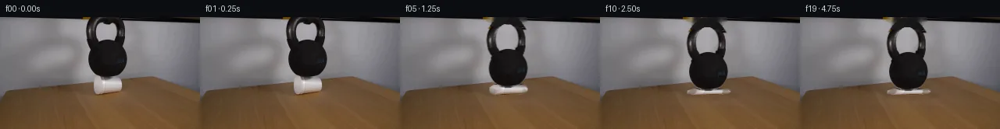

![首帧]()

Round 00
2026-11-05T10:41:58.296151+00:00像素候选变化代码 +288/−0inspection 更新
pixels a44f6864b585a9f6 · code d37ef9228fec1169
查看本轮 generate.py 真实 diff
--- previous/generate.py +++ current/generate.py @@ -0,0 +1,288 @@ +#!/usr/bin/env python3 +"""Generate a 20-frame physical continuation from first_frame.png. + +The animation uses only local pixel operations. The original kettlebell and cup +are isolated as textured layers; a static inpainted clean plate is exposed as +the cup buckles and the bell drops. No external assets or learned models are +used. +""" + +from pathlib import Path + +import cv2 +import numpy as np +from PIL import Image, ImageDraw, ImageFont + +import artifact_io + + +ROOT = Path(__file__).resolve().parent +W, H = 256, 144 +N = 20 +PAD_TOP = 24 + + +def ellipse_mask(shape, center, axes): + """Return an antialiased ellipse mask as float32.""" + out = np.zeros(shape, np.uint8) + cv2.ellipse(out, tuple(map(int, center)), tuple(map(int, axes)), 0, 0, 360, 255, -1, cv2.LINE_AA) + return out.astype(np.float32) / 255.0 + + +def make_source_layers(source): + """Extract soft masks for the source kettlebell and styrofoam cup.""" + # The geometry is measured from the first frame. A ring preserves the wall + # visible through the handle, while the lower ellipse covers the solid bell. + handle_outer = ellipse_mask((H, W), (136, 16), (26, 31)) + handle_inner = ellipse_mask((H, W), (136, 16), (14, 20)) + handle = np.clip(handle_outer - handle_inner, 0, 1) + body = ellipse_mask((H, W), (137, 53), (25, 25)) + # Slight neck bridge between the handle and body. + bridge = np.zeros((H, W), np.uint8) + cv2.ellipse(bridge, (136, 34), (18, 9), 0, 0, 360, 255, -1, cv2.LINE_AA) + kettle_geom = np.maximum.reduce([handle, body, bridge.astype(np.float32) / 255.0]) + + # Suppress any analytic-mask spill onto the gray wall. Dark kettle pixels + # remain opaque; the gradual band retains their original antialiased edge. + lum = cv2.cvtColor(source, cv2.COLOR_RGB2GRAY).astype(np.float32) + darkness = np.clip((132.0 - lum) / 48.0, 0.0, 1.0) + kettle_alpha = kettle_geom * np.maximum(darkness, kettle_geom * 0.18) + kettle_alpha[body > 0.78] = np.maximum(kettle_alpha[body > 0.78], 0.96) + kettle_alpha = cv2.GaussianBlur(kettle_alpha, (0, 0), 0.38) + kettle_alpha = np.clip(kettle_alpha, 0, 1) + + cup_poly = np.zeros((H, W), np.uint8) + cv2.fillPoly( + cup_poly, + [np.array([[125, 73], [150, 73], [156, 80], [157, 91], [151, 99], [127, 100], [120, 93], [120, 81]], np.int32)], + 255, + cv2.LINE_AA, + ) + cup_geom = cup_poly.astype(np.float32) / 255.0 + # Interior is known cup; at the silhouette, whiteness supplies a smooth + # confidence term so the source's soft edge is retained. + whiteness = np.clip((lum - 92.0) / 70.0, 0.0, 1.0) + cup_alpha = cup_geom * np.maximum(whiteness, cup_geom * 0.72) + cup_alpha = cv2.GaussianBlur(cup_alpha, (0, 0), 0.42) + cup_alpha = np.clip(cup_alpha, 0, 1) + return kettle_alpha, cup_alpha + + +def make_clean_plate(source, kettle_alpha, cup_alpha): + """Inpaint the once-occluded region into a single locked clean plate.""" + removal = np.maximum(kettle_alpha, cup_alpha) + mask = (removal > 0.025).astype(np.uint8) * 255 + # Remove the original contact shadow as well so a consistent shadow can be + # rendered below every deformed support state. + cv2.ellipse(mask, (139, 99), (29, 6), 0, 0, 360, 255, -1, cv2.LINE_AA) + mask = cv2.dilate(mask, np.ones((3, 3), np.uint8), iterations=1) + # TELEA is deterministic and uses only neighboring pixels from this frame. + bgr = cv2.cvtColor(source, cv2.COLOR_RGB2BGR) + clean = cv2.inpaint(bgr, mask, 4.0, cv2.INPAINT_TELEA) + return cv2.cvtColor(clean, cv2.COLOR_BGR2RGB) + + +def premultiplied_warp(rgb, alpha, matrix, size): + """Affine warp an RGB/alpha layer without dark color fringes.""" + premul = rgb.astype(np.float32) * alpha[..., None] … diff truncated; 201 more lines …